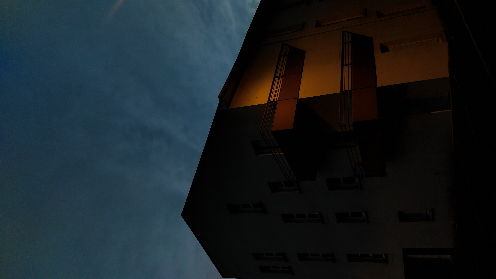
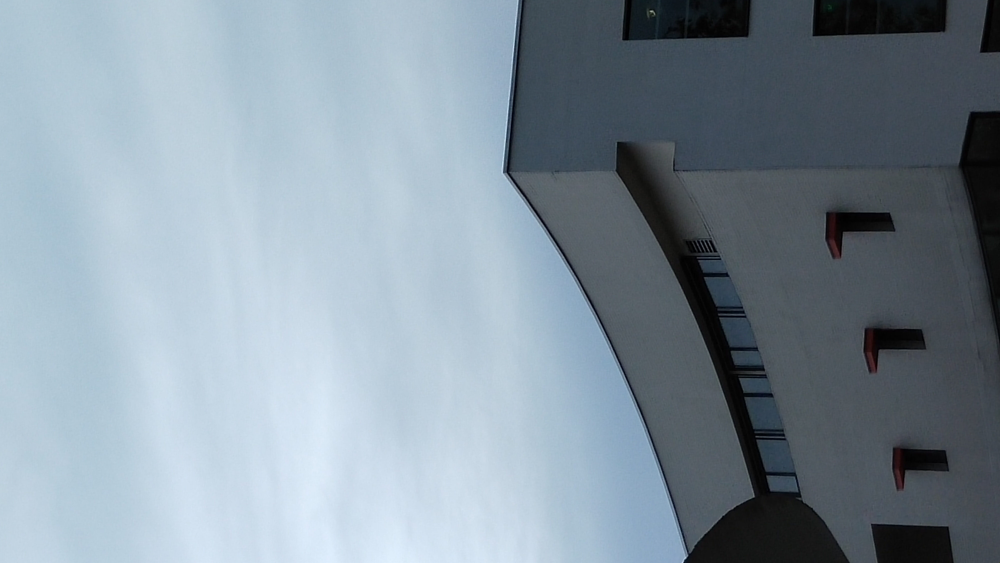
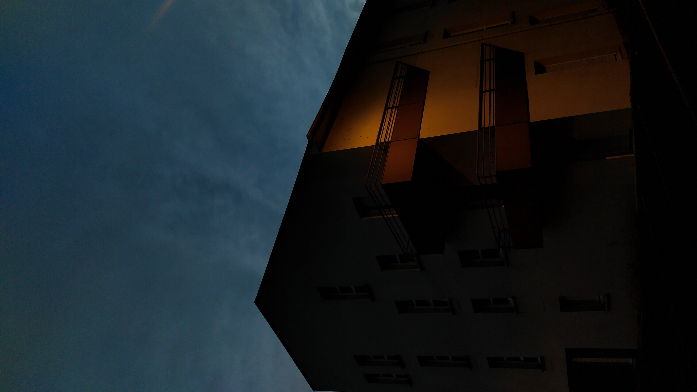
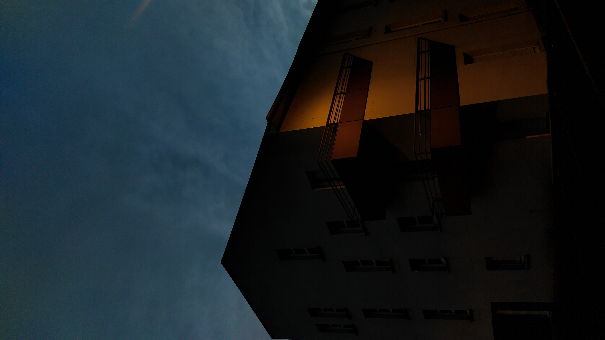
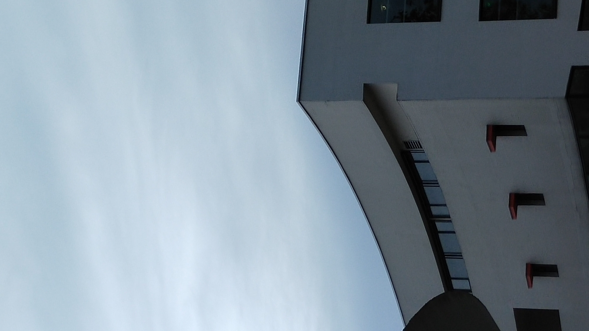
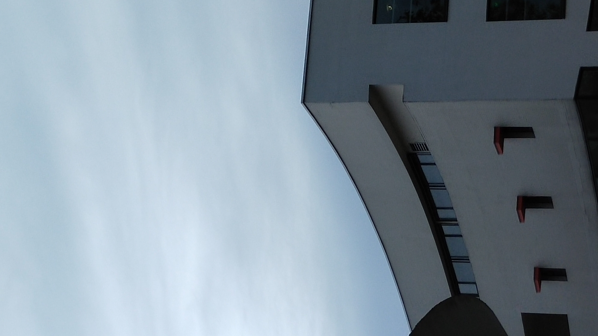

Eloise Caro Portfolio
Contact
@eloise.draw


Architecture et Paysage\\
Ce projet photographie interroge l’architecture ainsi que sa place dans le paysage. J’ai donc décidé de me baser sur un batiment (ESIE d’amiens), et de trouver les limites de la problèmatique, par différents moyens (cadrage, lumières). Ainsi, de manière chronologique les photos du batiments gagnent en contraste et le batiment lui même devient paysage.
Retour Acceuil


 

 
